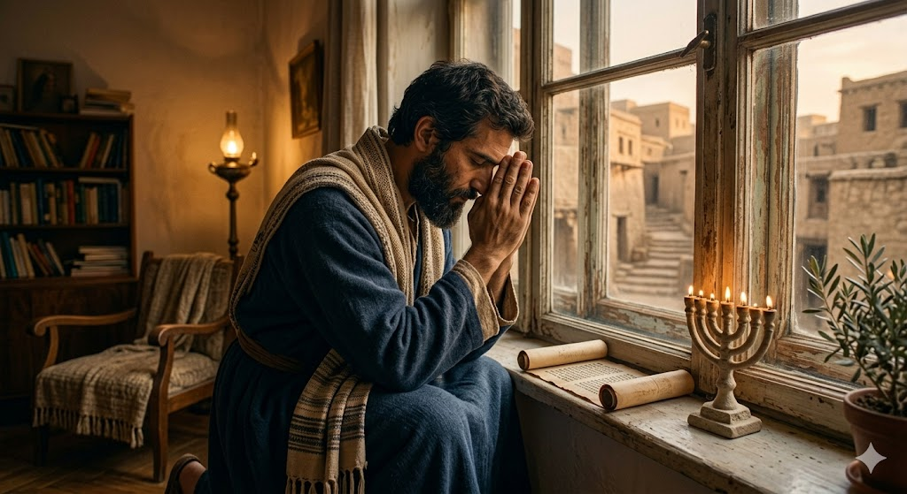
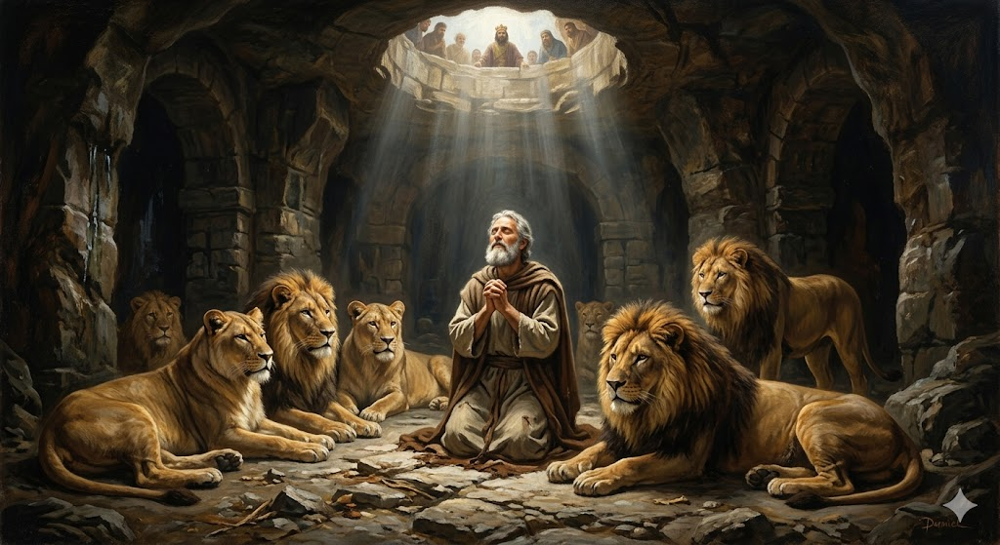
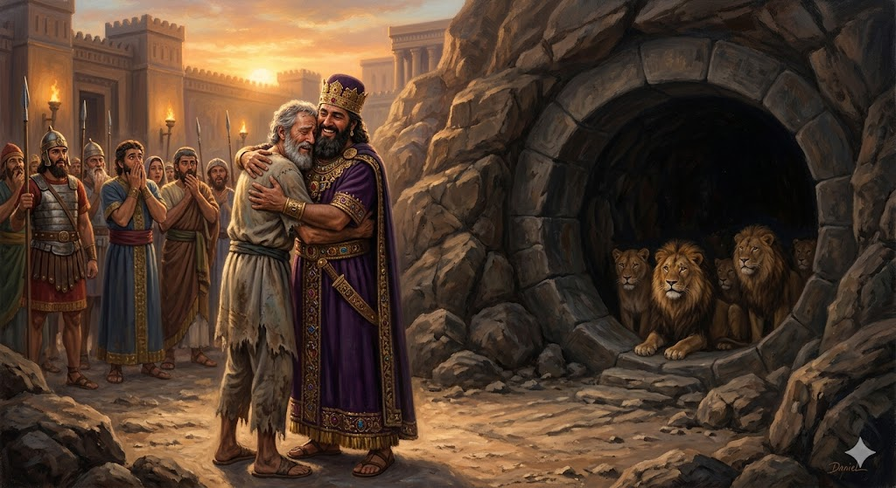

Daniel era un om foarte înțelept și iubit de rege, dar unii oameni invidioși au creat o lege prin care nimeni nu avea voie să se roage decât regelui. Daniel a trebuit să aleagă: să asculte de oameni sau de Dumnezeu?
1. Rugăciunea de la Fereastră
Deși știa că legea nouă îi interzicea să se roage, Daniel nu s-a ascuns. El a continuat să își deschidă fereastra spre Ierusalim și să vorbească cu Dumnezeu de trei ori pe zi. Daniel știa că prietenia cu Dumnezeu este mai importantă decât orice regulă greșită a oamenilor.

2. O Noapte cu Leii
Din cauza curajului său, Daniel a fost aruncat într-o groapă cu lei flămânzi. Regele a fost foarte trist, dar Daniel a stat liniștit. Dumnezeu a trimis un înger care a închis gura leilor, transformându-i din fiare periculoase în niște uriași blânzi care nu s-au atins de el.

3. Bucuria de Dimineață
Dis-de-dimineață, regele a alergat la groapă și l-a strigat pe Daniel. Când l-a văzut teafăr, s-a bucurat enorm! Regele a înțeles atunci că Dumnezeul lui Daniel este cel adevărat și a dat o lege nouă prin care toți oamenii trebuiau să respecte puterea Celui care l-a salvat pe Daniel.

„Dumnezeul meu a trimis pe îngerul Său şi a închis gura leilor, care nu mi-au făcut niciun rău.”
- Daniel 6:22
🌟 Concluzia Noastră
Daniel ne învață că rugăciunea ne dă un curaj uriaș. Chiar și atunci când cei din jur nu sunt de acord cu tine, dacă stai lângă Dumnezeu, El te va păzi chiar și în cele mai „fioroase” situații!
🦁 Știai că?
Daniel nu mai era un tânăr când a fost aruncat în groapă, ci avea peste 80 de ani! De asemenea, leii din acele vremuri erau lei asiatici, care trăiau în grupuri mari în Orientul Apropiat. Să stai o noapte întreagă printre ei fără să fii atins este o minune cu adevărat uriașă!